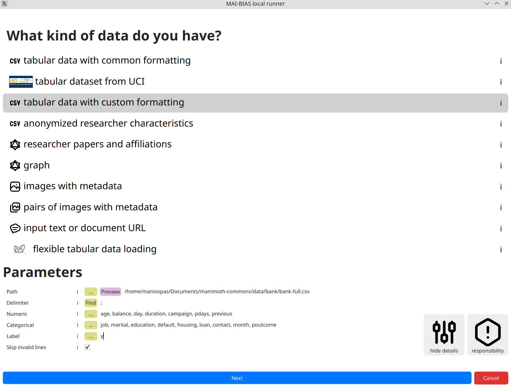
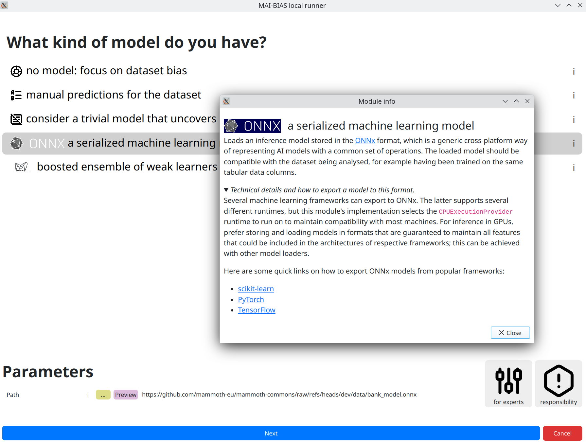
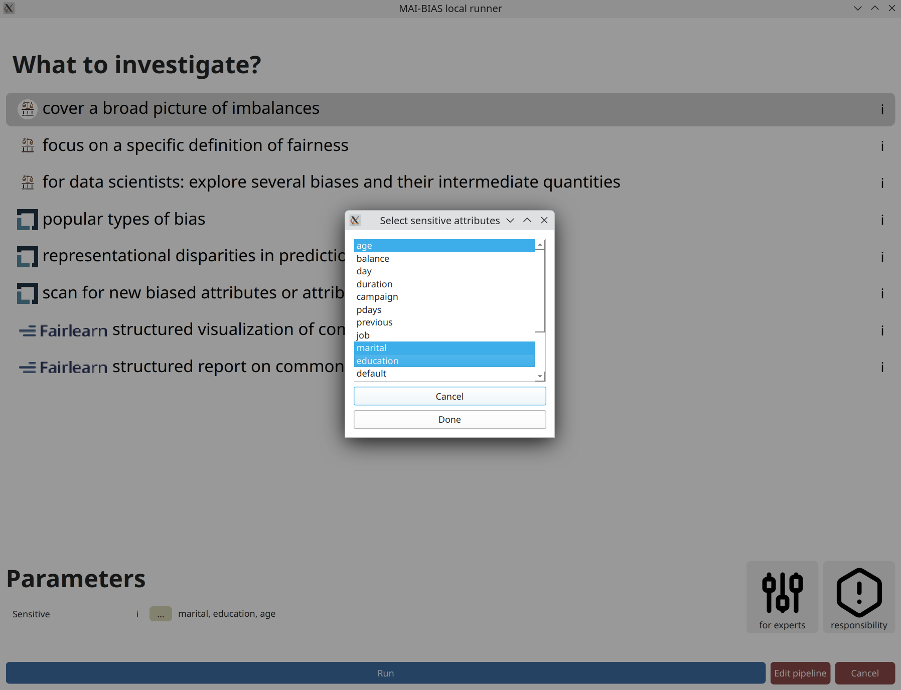
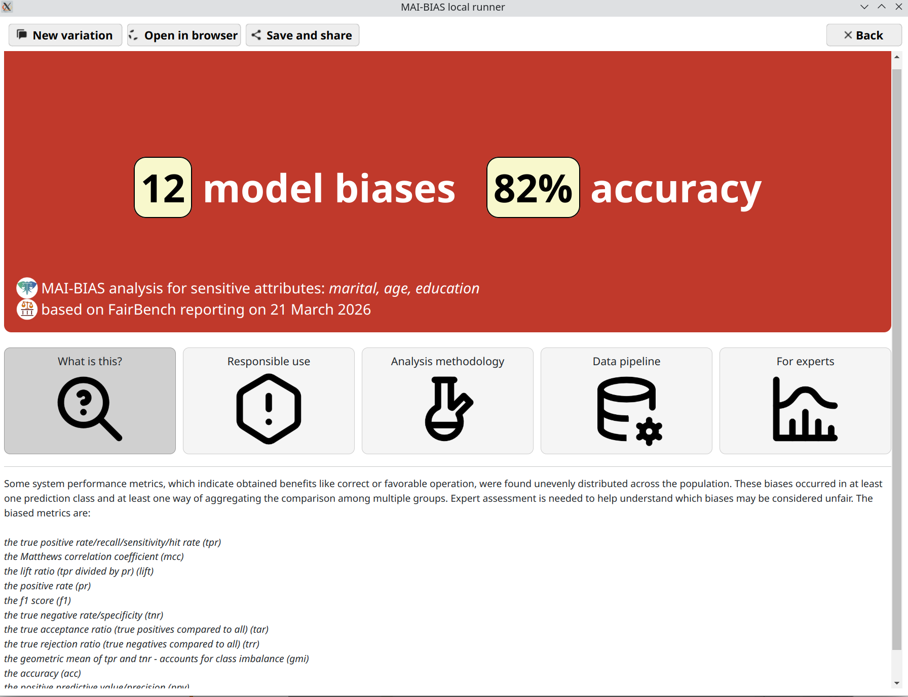
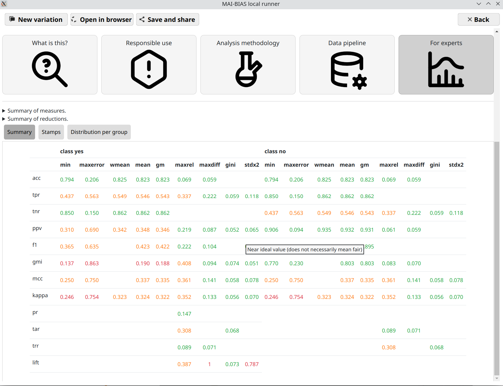

Requirements
This tutorial assumes that you have the MAI-BIAS toolkit already installed and a dataset and model available. Find installation instructions here, and we will use files from our integration test data here. You can use other urls or -if you are running the local runner- local files too. Everything shown below is for the local runner.
It is also assumed that you have some basic familiarity with the local runner's concepts. If unsure, read first how to audit a dataset in 10 clicks here here.
Here is how the investigated model was created. You can also train your own.
The model is created using sklearn and saved into ONNX format. You can follow instructions
of how to export in that format under the i information button when selecting
the namesake model loader. The example here is more concrete. Do note that training below
does not take into account any notion of fairness, and may thus create excessively biased models.
For more information on the dataset see the data selection step.
First install some basic libraries like pandas, sklearn, and skl2onnx in a Python environment. We will train a logistic regression model and will pack a categorical attribute preprocessor within the model instead of creating one-hot encodings of categorical labels; both options are supported from the ONNX model loader later, so the more complicated option is showcased.
import pandas as pd
from sklearn.preprocessing import OneHotEncoder, StandardScaler
from sklearn.compose import ColumnTransformer
from sklearn.pipeline import Pipeline
from sklearn.linear_model import LogisticRegression
from skl2onnx import convert_sklearn
from skl2onnx.common.data_types import FloatTensorType, StringTensorType
df = pd.read_csv("bank.csv", sep=";")
df = df.dropna() # drop rows with NA
X = df.drop("y", axis=1)
y = (df["y"] == "yes").astype(int)
numeric_features = [
"age",
"balance",
"day",
"duration",
"campaign",
"pdays",
"previous",
]
categorical_features = [
"job",
"marital",
"education",
"default",
"housing",
"loan",
"contact",
"month",
"poutcome",
]
numeric_transformer = Pipeline(steps=[("scaler", StandardScaler())])
categorical_transformer = Pipeline(steps=[("onehot", OneHotEncoder(handle_unknown="ignore"))])
preprocessor = ColumnTransformer(
transformers=[
("num", numeric_transformer, numeric_features),
("cat", categorical_transformer, categorical_features),
]
)
clf = Pipeline(steps=[("preprocessor", preprocessor), ("model", LogisticRegression(max_iter=200))])
clf.fit(X, y)
We now export the trained classifier into a bank_model.onnx file.
initial_types = []
for col in numeric_features:
initial_types.append((col, FloatTensorType([None, 1])))
for col in categorical_features:
initial_types.append((col, StringTensorType([None, 1])))
onnx_model = convert_sklearn(clf, initial_types=initial_types)
with open("bank_model.onnx", "wb") as f:
f.write(onnx_model.SerializeToString())
Dataset
From the runner's starting screen, start a new analysis. The dataset selection screen opens, and we will load a CSV stored in this online Path:
https://raw.githubusercontent.com/mammoth-eu/mammoth-commons/refs/heads/dev/data/bank/bank-full.csv
The above is the Bank dataset for loan approvals given certain individual attributes. Those are stored in tabular data format; that is, data rows correspond to persons and columns correspond to attributes. Importantly, AI models may leverage a subset of tabular datasets, in which case we need specify the custom formating.
Actually, this dataset also deviates from the typical CSV specifications in that
it employs a custom delimiter symbol for separating attribute columns within the raw data.
So we need to click on the for experts button to also show the respective option. Click
on find to automatically adjust the delimiters.
The trained model that we will use in the next step, also makes the following selections, of which numeric attributes are those quantified as numbers, categorical attributes are discrete labels (e.g., marital status can be married, single, divorced) and the label is the name of the attribute being predicted, which in this case corresponds to granting a loan or not:
numeric attributes: age, balance, day, duration, campaign, pdays, previous
categorical attributes: job, marital, education, default, housing, loan, contact, month, poutcome
label: y
In general, model creators or data owners are responsible for providing information like the above to non-technical people. Once inputted once, you can create variations of the same run so that you do not need to re-enter information.

Model
Moving to next the next step, we can now input our model. You can see how a model created from the sklearn library was saved into ONNX format in this page's preparations. The result can be retrieved from the following URL (or give a local path to your own model) after selecting the appropriate model loader for ONNX models:
https://github.com/mammoth-eu/mammoth-commons/raw/refs/heads/dev/data/bank_model.onnx
Reminder that you can always see more information for MAI-BIAS modules by clicking on the i
button in their line. This is done for our chosen loader in the screenshot below.

Analysis
Finally, click on the kind of analysis you want to conduct. Available options depend on the model and dataset types you have selected. Analyzing the bias of a dataset alone is tougher than that of a dataset plus model (where you can check for imbalances) so the options are more limited here.
Like previously, there may be options for experts that help heavily customize
the analysis. Looking at those is important at this juncture to avoid fairness washing with
deceptively positive assessments. Most modules err on the side of strictness for common cases,
but default parameters can in no way account for every situation.
A parameter that always appears is designating sensitive attributes from your dataset.
Often, including now, you can click on ... and then click on attributes
you want to analyze. Or you could write them by hand as a comma-separated list.
Contrary to many frameworks, you can select multiple attributes, and many modules account for
their intersectionality too. You may also have numerical sensitive attributes, though a few modules
will complain about them. But not this one. Finally,
consider another click on run to perform the analysis.

Results
That's it! You are now seeing the outcomes of fairness analysis. This starts with a short phrase that is summary judgment of whether -or how many- biases have been found. This is presented alongside some information about the sensitive attributes analyzed, as well as the date and the main technologies involved in the analysis itself.
Underneath, you can find various tabs that contain more details, and are suited for different kinds of users.
Use the save and share button on top to export the analysis outcome as a
file. That can be shared with others to open in their browser.

Where are the measures?
This tutorial claimed that it would assess hundreds of measures. So where are they?
To help maintain a clean overview, they are hidden under the for experts
segment. Click on this and you will see lots of measures.
Overall, each cell in the resulting table is a standardized measures of bias or fairness.
They are computed by separating each population group or intersectional subgroup and computing
a basic measures of algorithmic benefits, such as making predictions for the group with high
accuracy, high true positive rate, and so on. Open the distributions per group mode of
Expert results to see all computations. Continuous-valued sensitive attributes are also supported through
fuzzy group membership computations.
Base measures are organized as rows. Then, each kind of them is converted to several aggregate
assessments that give an intuition over its distribution imbalances. For example, the minimum value
across groups is column min, and the maximum difference between groups is maxdiff.
There is a legend for measures and reduction strategies on top.
methodology tab.
